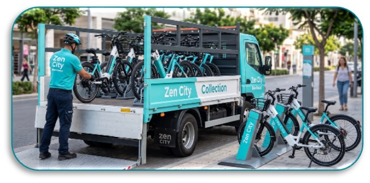

Q2 2022 Growth Strategy
Turning one quarter of Q1 ridership data into concrete moves for April-June.
Presented by:
Telem Azaria & Daniel Joseph
Before optimizing anything, the Q1 data forced a different starting picture of the business. Zen City's ridership isn't spread evenly across the city - it's concentrated almost entirely around the UT Austin campus corridor.
77.3%
of Q1 trips come from Student Membership riders
~9.8x the next-largest segment
~8x
trips start from just 10 stations but spread across ~8x as many destinations
all 16,578 Q1 trips
Analysis of 78 stations - Traffic per Dock = (Departures + Arrivals) ÷ Docks
11.5%
9 of 78 stations
Traffic per dock > 100 candidates for rebalancing routes.
7.7%
6 of 78 stations
Healthy utilization relative to dock capacity monitor.
80.8%
63 of 78 stations
Traffic per dock < 10 consistent with the one-way flow.
242
departures per dock at 22½ & Rio Grande
the most stretched station in the network
running on just 4 docks
Run nightly rebalancing routes returning bikes to the top 10 origin stations before the next morning surge - cheaper and faster than adding physical docks.

16,578 Q1 trips split into three distinct behavioral groups - not shrunk copies of each other. Geography, timing, and trip length all diverge.
Partner with Cap10K's race organizers to include a 3-day Zen City pass in every race-bib registration fee. Runners are active, adult, non-student - exactly the profile that's easy to convert once they've already tried the product “for free.”
Sponsor the full weekly summer series, not a single date - “Blues on the Green, powered by Zen City.” Add a punch-card promo: scan your bike's QR code at 3 different shows and get a free month of Local31.
53
predicted rentals
Station 2498 · Friday, April 1, 2022
Filter cleaned Q1 rentals to trips starting at station 2498 only.
April 1, 2022, is a Friday, so pull all Fridays in the cleaned Q1 data - 12 Fridays between Jan 1 and Mar 31.
UT Austin's spring break fell in mid-March, so the one Friday inside it (March 18) is excluded, leaving 11 usable Fridays.
Rather than averaging all 11 Fridays equally, we isolate the 3 most recent Fridays (Mar 4, 11, 25 → avg 48.3) as the current level, then add one week of the quarter's verified growth (+5.01/week, R²=0.46) to project to April 1.